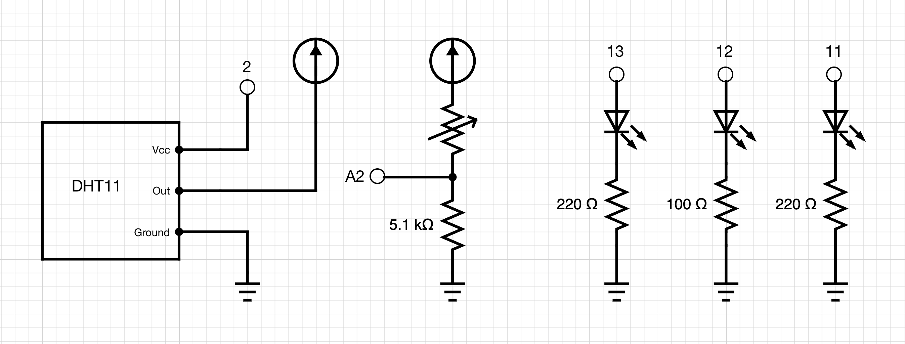
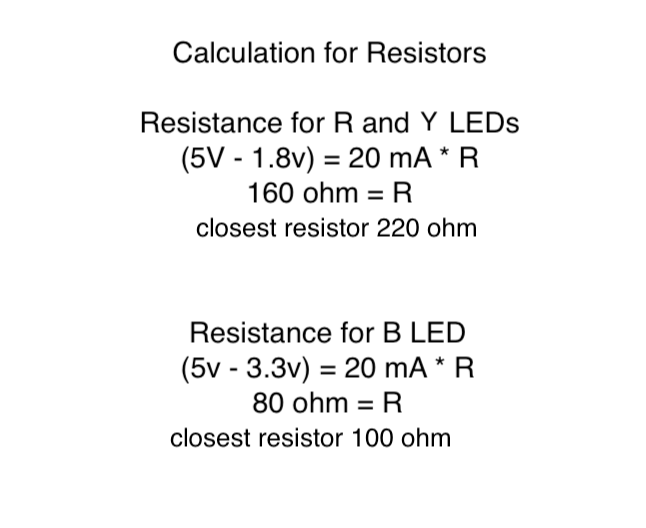
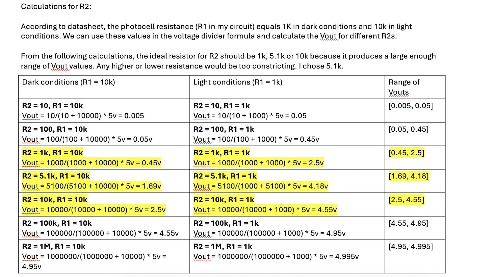
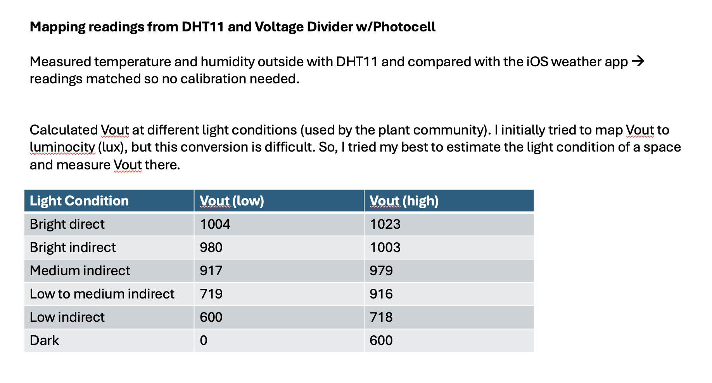
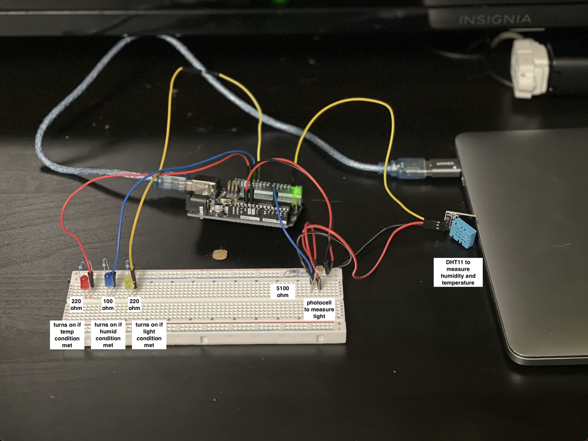
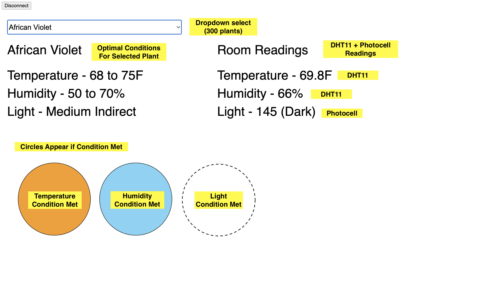

Circuit demo

Here is all the documentation for assignment 6!
My plants keep dying unfortunately. This device lets me know if a plant's optimal conditions (temp, humid, light) are met.
Circuit schematic

Calculations for LED resistors

Calculations for photocell resistor

Converting Vout to Light Condition

Circuit image

P5 Application
Arduino Code
// detect if a room has optimal conditions (temperature, humidity and light) for a plant!
// LEDs will turn on when a condition is met
#include < SimpleDHT.h > //import library used by DHT11
int pinDHT11 = 2; //DHT11 data pin
SimpleDHT11 dht11(pinDHT11); //setup DHT11
int analogPin = A2; //set analog pin for photocell
int luminance = 0; //intialize lum -> stores analogRead(analogPin)
int red = 13; //red LED pin
int blue = 12; //blue LED pin
int yellow = 11; //yellow LED pin
char data[4]; // create buffer for incoming byte array
void setup() {
Serial.begin(9600); // set serial baud rate
pinMode(red, OUTPUT); // setup red LED pin
pinMode(blue, OUTPUT); // setup blue LED pin
pinMode(yellow, OUTPUT); // setup yellow LED pin
}
void loop() {
// start working...
// read without samples.
byte temperature = 0; //initiallize temp as a byte
byte humidity = 0; //initialize humidity as a byte
int err = SimpleDHTErrSuccess; //capture error
if ((err = dht11.read(&temperature, &humidity, NULL)) != SimpleDHTErrSuccess) { // if error
delay(1000); // delay
return; // return
}
//if no error, temp and humdity reading successful, print to serial as comma seperated
Serial.print((int)temperature); //print temperature to serial
Serial.print(","); //seperate with comma
Serial.print((int)humidity); //print humidity to serial
Serial.print(","); //seperate with comma
// DHT11 sampling rate is 1HZ.
luminance = analogRead(analogPin); // read Vout (luminance)
Serial.println(luminance); //print luminance to serial
if (Serial.available() >= 3) { //if received byte array of lenght 3
int bytesRead = Serial.readBytes(data, 3); //store byte array
data[bytesRead] = '\0'; // Null-terminate the string
for (int i = 0; i< 3; i++){ // iterate through null array
if (data[i] == 1) { // if value "ON"
digitalWrite((13-i), HIGH); // turn corresponding LED on
} else if (data[i] == 0) { // if value "OFF"
digitalWrite((13-i), LOW); // turn corresponding LED off
}
}
}
delay(1500); // delay to give time for next reading
}
P5 Code Snippet
// detect if a room has optimal conditions (temperature, humidity and light) for a plant!
// colorful circles will appear on the screen when a condition is met
const BAUD_RATE = 9600; // This should match the baud rate in your Arduino sketch
let port, connectBtn; // Declare global variables
let t = 0; //intialize global variable temperature reading
let h = 0; //intialize global variable humidity reading
let l = 0; //intialize global variable luminance reading
let plantsJSON; //store plants database as global object
let plantSelect; //store plantSelect dropdown field
let plant; //store plant selection
//get brightness description depending on Vout reading
function getBrightnessLevel(l) {
//calculated these values by testing different light conditions in the real world with the photocell
//these brightness classifiers are commonly used by the plant community
if (l >= 1004) {
//if Vout > 1004, light condition is Bright Direct
return "Bright Direct";
} else if (l < 1004 && l >= 980) {
//if Vout > 980, light condition is Bright Indirect
return "Bright Indirect";
} else if (l < 980 && l >= 917) {
//if Vout > 917, light condition is Medium Indirect
return "Medium Indirect";
} else if (l < 917 && l >= 790) {
//if Vout > 790, light condition is Low to Medium Indirect
return "Low to Medium Indirect";
} else if (l < 790 && l >= 600) {
//if Vout > 600, light condition is Low Indirect
return "Low Indirect";
} else if (l < 600) {
//if Vout < 600, light condition is Dark
return "Dark";
}
}
//fetch plants.json files and return
async function loadJsonFromServer() {
try {
const response = await fetch("./plants.json");
if (!response.ok) {
throw new Error(`HTTP error! status: ${response.status}`);
}
const data = await response.json();
//console.log(data);
return data;
} catch (error) {
console.error("Error fetching JSON:", error);
}
}
function setup() {
setupSerial(); // Run our serial setup function (below)
// Create ;a canvas that is the size of our browser window.
// windowWidth and windowHeight are p5 variables
createCanvas(windowWidth, windowHeight);
plantSelect = createSelect(); //create dropdown select and store as plantSelect
plantSelect.position(20, 55); //set position of dropdown
plantSelect.style("height", "40px"); //set dropdown height
plantSelect.style("font-size", "20px"); //set dropwdown font size
//fetch json obj from server
loadJsonFromServer().then((plants) => {
plantsJSON = plants; //store json obj as global variable plantsJSON
for (p in plants) {
plantSelect.option(p); // iterate through each item and add the plants' names as dropdown options
}
plantSelect.selected(plants[0]); // set default drop down selection to first plant name
});
}
function draw() {
const portIsOpen = checkPort(); // Check whether the port is open (see checkPort function below)
if (!portIsOpen) return; // If the port is not open, exit the draw loop
let str = port.readUntil("\n"); // Read from the port until the newline
if (str.length == 0) return; // If we didn't read anything, return.
let thlArray = str.trim().split(","); // Trim whitespace and split on commas
t = (thlArray[0] * 9) / 5 + 32; //store first value in t -> convert to faranheight
h = thlArray[1]; //store second value in h
l = thlArray[2]; //store third value in l
let plant = plantSelect.selected(); //store drop down selection
let ledArr = [0, 0, 0]; //intialize byte array
let plantObj = plantsJSON[plant]; //get plant object
clear(); //clear screen
fill("black");
textSize(35);
text(`Room Readings`, 600, 150); //add text "room readings"
text(`Temperature - ${t}F`, 600, 220); //add text for temperature reading
text(`Humidity - ${h}%`, 600, 270); //add text for humidity reading
text(`Light - ${l} (${getBrightnessLevel(l)})`, 600, 320); //add text for brightness reading
text(`${plant}`, 20, 150); //add text for the plant's name
text(
`Temperature - ${plantObj["tempLow"]} to ${plantObj["tempHigh"]}F`,
20,
220
); //add text for plants optimal temperature conditions
text(
`Humidity - ${plantObj["humidLow"]} to ${plantObj["humidHigh"]}%`,
20,
270
); //add text for plants optimal humidity conditions
text(`Light - ${plantObj["lightDescription"]}`, 20, 320); //add text for plants optimal light conditions
if (t >= plantObj["tempLow"] && t <= plantObj["tempHigh"]) {
//if temp reading within optimal conditions
ledArr[0] = 1; //set first value of byte array
fill(248, 158, 27);
circle(150, 550, 200); //draw red circle
} else {
//else temp outside optimal conditions
ledArr[0] = 0; //set first value of byte array
}
if (h >= plantObj["humidLow"] && h <= plantObj["humidHigh"]) {
//if current humidity reading within optimal conditions
ledArr[1] = 1; //set second value of byte array
fill(128, 211, 245);
circle(375, 550, 200); //draw blue circle
} else {
//else humidity outside optimal conditions
ledArr[1] = 0; //set second value of byte array
}
if (plantObj["lightDescription"] == getBrightnessLevel(l)) {
//if current brightness reading within optimal conditions
ledArr[2] = 1; //set third value of byte array
fill(247, 214, 51);
circle(600, 550, 200); //draw yellow circle
} else {
//else brightness outside optimal conditions
ledArr[2] = 0; //set third value of byte array
}
port.write(ledArr); //sent byteArray to serial
}
function setupSerial() {
port = createSerial();
// Check to see if there are any ports we have used previously
let usedPorts = usedSerialPorts();
if (usedPorts.length > 0) {
// If there are ports we've used, open the first one
port.open(usedPorts[0], BAUD_RATE);
}
// // create a connect button
connectBtn = createButton("Connect to Arduino");
connectBtn.position(5, 5); // Position the button in the top left of the screen.
connectBtn.mouseClicked(onConnectButtonClicked); // When the button is clicked, run the onConnectButtonClicked function
}
function checkPort() {
if (!port.opened()) {
// If the port is not open, change button text
connectBtn.html("Connect to Arduino");
// Set background to gray
background("gray");
return false;
} else {
// Otherwise we are connected
connectBtn.html("Disconnect");
return true;
}
}
function onConnectButtonClicked() {
// When the connect button is clicked
if (!port.opened()) {
// If the port is not opened, we open it
port.open(BAUD_RATE);
} else {
// Otherwise, we close it!
port.close();
}
}
Circuit demo